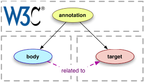
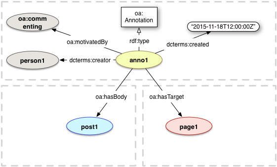

Onekin
's proxy for Neo4j guides
?
Status:
No connected Neo4j engine....

No data model compliance.
Home
Guide slides:
0
/
0
❮
❯
Click :play button to load a Neo4J guide
Show/hide query console
Cypher query console:
Run
Data Model:
MATCH (a) RETURN a limit 3

Query result:
Tabular view
Draw
GRAPHICS VISUALIZATION
JSON.STRINGIFY VISUALIZATION